import numpy as np
import pandas as pd
import os
import json
import requests
import shutil
import matplotlib.pyplot as plt
import seaborn as sns
from sklearn.preprocessing import normalize
import plotly.express as px
from _cde_compute_edges_from_nodes import *
pd.set_option('display.max_columns', None)
pd.set_option('display.max_rows', None)
# suppress warnings
import warnings
warnings.filterwarnings("ignore")Distance Analysis: colon-xenium-stanford and colon-cycif-sorgerlab
Analyze and visualize cell-to-nearest-endothelial-cell distance distributions for the
colon-xenium-stanford and colon-cycif-sorgerlab datasets.
basepath = "/u/yashjain/hra-cell-distance-analysis/data"
dataset_dir = "colon-cycif-sorgerlab-xenium-stanford" # This variable is used only for figures.
dataset_dir_1 = "colon-xenium-stanford" # This variable is used for data loading dataset 1.
dataset_dir_2 = "colon-cycif-sorgerlab" # This variable is used for data loading dataset 2.
data_filedir_1 = os.path.join("data-processed-nodes-with-harmonized-cell-types", dataset_dir_1)
output_edge_dir_1 = os.path.join("data-processed-edges", dataset_dir_1)
data_filedir_2 = os.path.join("data-processed-nodes-with-harmonized-cell-types", dataset_dir_2)
output_edge_dir_2 = os.path.join("data-processed-edges", dataset_dir_2)
figures_output_dir = "generated-figures"# Function to load your data
def load_data(path, edges=False):
if edges:
column_names = ['cell_id', 'x1', 'y1', 'z1', 'x2', 'y2', 'z2']
data = pd.read_csv(path, header=None, names=column_names)
else:
data = pd.read_csv(path)
return data# Function to read all files ending with "-nodes.csv" in the `data_filedir` directory into a single DataFrame.
# Another additional column `Dataset` is added to identify the dataset name which comes from the filename before the `-nodes.csv` suffix.
# Additionally, function reads all files ending with "-edges.csv" in the `output_edge_dir` directory into a single DataFrame.
# Three additional columns are added "Dataset", "Anchor Cell Type", and "Anchor Cell Type Level" to identify the dataset name, anchor cell type, and anchor cell type level respectively which come from the filename before the `.csv` suffix.
# The three additional columns are created by splitting the filename on the `-` character, and extracting the relevant parts.
# On splitting, the first part is the dataset name, second part is the anchor cell type level, and third part is the anchor cell type, and last part is the `edges` suffix.
# When reading files, check if the file has the correct format (i.e., ends with `-edges.csv`).
# Additionally, the function merges the edges DataFrame with the nodes DataFrame to get the cell type information for the anchor cells.
# This is done by reading the corresponding nodes file from the `data_filedir` directory for each edges file, and merging it with the edges DataFrame on the `cell_id` column.
# The merged DataFrame contains the edges with additional columns for the cell type information.
# The function returns three DataFrames:
# 1. `merged_nodes`: DataFrame containing all nodes with an additional column `Dataset`.
# 2. `merged_edges`: DataFrame containing all edges with additional columns `Dataset`, `Anchor Cell Type`, and `Anchor Cell Type Level`.
# 3. `merged_nodes_for_all_edges`: DataFrame containing all edges with additional columns `Dataset`, `Anchor Cell Type`, `Anchor Cell Type Level`, and the cell type information for cells.
def read_all_edge_datasets(basepath, data_filedir, output_edge_dir):
all_nodes_files = []
all_edges_files = []
all_nodes_edges_files = []
for file in os.listdir(os.path.join(basepath, output_edge_dir)):
if file.endswith("-edges.csv"):
file_path = os.path.join(basepath, output_edge_dir, file)
dataset_name, anchor_cell_type_level, anchor_cell_type = file.replace("-edges.csv", "").split('-')
edges_df = load_data(file_path, edges=False)
edges_df['Dataset'] = dataset_name
edges_df['Anchor Cell Type'] = anchor_cell_type
edges_df['Anchor Cell Type Level'] = anchor_cell_type_level
edges_df.rename(columns={"distance": "Distance"}, inplace=True) # Rename column "distance" to "Distance".
all_edges_files.append(edges_df)
# Read the corresponding nodes file from data_filedir to get the cell type information
nodes_file_path = os.path.join(basepath, data_filedir, f"{dataset_name}-nodes.csv")
nodes_df = load_data(nodes_file_path)
nodes_df['Dataset'] = dataset_name
all_nodes_files.append(nodes_df)
# Add a new 'cell_id' column to nodes_df
nodes_df['cell_id'] = range(len(nodes_df))
# Set 'cell_id' column as index for nodes_df
nodes_df.set_index('cell_id', inplace=True)
# Merge edges_df with nodes_df to get the cell type information for the anchor cells
edges_nodes_df = pd.merge(edges_df, nodes_df[['Level Three Cell Type', 'Level Two Cell Type', 'Level One Cell Type']], how='left', left_on='cell_id', right_index=True)
all_nodes_edges_files.append(edges_nodes_df)
merged_edges = pd.concat(all_edges_files, ignore_index=True)
merged_nodes = pd.concat(all_nodes_files, ignore_index=True)
merged_nodes_for_all_edges = pd.concat(all_nodes_edges_files, ignore_index=True)
return merged_nodes, merged_edges, merged_nodes_for_all_edgesdef create_directory(directory):
if not os.path.exists(directory):
os.makedirs(directory)
print(f"Directory '{directory}' created successfully.")
else:
print(f"Directory '{directory}' already exists.")Get initial statistics and identify endothelial cell categories for dataset.
# Read all datasets from Dataset 1
df_all_nodes_1, df_all_edges_1, df_all_edges_with_cell_types_1 = read_all_edge_datasets(basepath, data_filedir_1, output_edge_dir_1)
# Create a column 'Tissue Type' in all three DataFrames with the value dataset_dir_1
df_all_nodes_1['Tissue Type'] = dataset_dir_1
df_all_edges_1['Tissue Type'] = dataset_dir_1
df_all_edges_with_cell_types_1['Tissue Type'] = dataset_dir_1
# Read all datasets from Dataset 2
df_all_nodes_2, df_all_edges_2, df_all_edges_with_cell_types_2 = read_all_edge_datasets(basepath, data_filedir_2, output_edge_dir_2)
# Create a column 'Tissue Type' in all three DataFrames with the value dataset_dir_2
df_all_nodes_2['Tissue Type'] = dataset_dir_2
df_all_edges_2['Tissue Type'] = dataset_dir_2
df_all_edges_with_cell_types_2['Tissue Type'] = dataset_dir_2
# Merge the two datasets
df_all_nodes = pd.concat([df_all_nodes_1, df_all_nodes_2], ignore_index=True)
df_all_edges = pd.concat([df_all_edges_1, df_all_edges_2], ignore_index=True)
df_all_edges_with_cell_types = pd.concat([df_all_edges_with_cell_types_1, df_all_edges_with_cell_types_2], ignore_index=True)df_all_nodes.head(5)| x | y | Original Cell Type | Level Three Cell Type | Level Three CL Label | Level Three CL ID | CL_Match/3 | Level Two Cell Type | Level Two CL Label | Level Two CL ID | CL_Match/2 | Level One Cell Type | Level One CL Label | Level One CL ID | CL_Match/1 | Dataset | Tissue Type | |
|---|---|---|---|---|---|---|---|---|---|---|---|---|---|---|---|---|---|
| 0 | 1077.96 | 2556.82 | Immature Goblet | goblet cell:immature | goblet cell:immature | CL:0000160 | skos:narrowMatch | goblet cell | goblet cell | CL:0000160 | skos:exactMatch | epithelial cell | epithelial cell | CL:0000066 | skos:exactMatch | layer_3 | colon-xenium-stanford |
| 1 | 1079.01 | 2534.23 | Tuft | tuft cell:intestinal | intestinal tuft cell | CL:0019032 | skos:exactMatch | tuft cell | brush cell | CL:0002204 | skos:exactMatch | epithelial cell | epithelial cell | CL:0000066 | skos:exactMatch | layer_3 | colon-xenium-stanford |
| 2 | 1082.65 | 2554.09 | TA1 | transit amplifying cell | transit amplifying cell | CL:0009010 | skos:exactMatch | enterocyte | enterocyte | CL:0000584 | skos:exactMatch | epithelial cell | epithelial cell | CL:0000066 | skos:exactMatch | layer_3 | colon-xenium-stanford |
| 3 | 1091.89 | 2547.38 | Immature Goblet | goblet cell:immature | goblet cell:immature | CL:0000160 | skos:narrowMatch | goblet cell | goblet cell | CL:0000160 | skos:exactMatch | epithelial cell | epithelial cell | CL:0000066 | skos:exactMatch | layer_3 | colon-xenium-stanford |
| 4 | 1253.46 | 2554.64 | CD4+ | t cell:cd4+ alpha-beta | CD4-positive, alpha-beta T cell | CL:0000624 | skos:exactMatch | t cell | T cell | CL:0000084 | skos:exactMatch | immune cell | leukocyte | CL:0000738 | skos:exactMatch | layer_3 | colon-xenium-stanford |
# Print the total number of unique cell types per dataset. Compute separately for each cell type column (Level One Cell Type, Level Two Cell Type, Level Three Cell Type, Original Cell Type).
print("Total number of unique cell types per cell type annnotation level:")
unique_cell_types = {
'Original Cell Type': df_all_nodes['Original Cell Type'].nunique(),
'Level Three Cell Type': df_all_nodes['Level Three Cell Type'].nunique(),
'Level Two Cell Type': df_all_nodes['Level Two Cell Type'].nunique(),
'Level One Cell Type': df_all_nodes['Level One Cell Type'].nunique()
}
for cell_type, count in unique_cell_types.items():
print(f"{cell_type}: {count}")Total number of unique cell types per cell type annnotation level:
Original Cell Type: 61
Level Three Cell Type: 56
Level Two Cell Type: 21
Level One Cell Type: 6# Save the unique cell types containing "endothelial" in name per cell type column (Level One Cell Type, Level Two Cell Type, Level Three Cell Type, Original Cell Type) to a dictionary where the key is the level and the value is a list of unique cell types.
endothelial_cell_types = {
'Original Cell Type': df_all_nodes[df_all_nodes['Original Cell Type'].str.contains("endothelial", case=False, na=False)]['Original Cell Type'].unique().tolist(),
'Level Three Cell Type': df_all_nodes[df_all_nodes['Level Three Cell Type'].str.contains("endothelial", case=False, na=False)]['Level Three Cell Type'].unique().tolist(),
'Level Two Cell Type': df_all_nodes[df_all_nodes['Level Two Cell Type'].str.contains("endothelial", case=False, na=False)]['Level Two Cell Type'].unique().tolist(),
'Level One Cell Type': df_all_nodes[df_all_nodes['Level One Cell Type'].str.contains("endothelial", case=False, na=False)]['Level One Cell Type'].unique().tolist()
}
print("\nEndothelial cell types per cell type annotation level:")
for level, cell_types in endothelial_cell_types.items():
print(f"\n{level}:")
for cell in cell_types:
print(f" - {cell}")
Endothelial cell types per cell type annotation level:
Original Cell Type:
- Endothelial
- Lymphatic endothelial cells
Level Three Cell Type:
- endothelial cell
- endothelial cell of lymphatic vessel
Level Two Cell Type:
- endothelial cell
- endothelial cell of lymphatic vessel
Level One Cell Type:
- endothelial celltype_field_list = ["Level Three Cell Type", "Level Two Cell Type", "Level One Cell Type"] # Skipping Original Cell Type as it is not a hierarchical level.
# Define the anchor cell type (type of endothelial cell) for each level in type_field_list based on available categories in the previous cell. The distance analysis at all three levels will be limited to the specified anchor cell type.
anchor_cell_type_dict = {
'Level Three Cell Type': 'endothelial cell',
'Level Two Cell Type': 'endothelial cell',
'Level One Cell Type': 'endothelial cell'
}Process datasets to add region information to Nodes files.
# Create a dictionary to map skin regions to correct condition.
region_map = {dataset_dir_1:'xenium-stanford',
dataset_dir_2:'cycif-sorgerlab',
}
# Define the standard region sequence for plots
regions = ['xenium-stanford', 'cycif-sorgerlab']df_all_nodes.head()| x | y | Original Cell Type | Level Three Cell Type | Level Three CL Label | Level Three CL ID | CL_Match/3 | Level Two Cell Type | Level Two CL Label | Level Two CL ID | CL_Match/2 | Level One Cell Type | Level One CL Label | Level One CL ID | CL_Match/1 | Dataset | Tissue Type | |
|---|---|---|---|---|---|---|---|---|---|---|---|---|---|---|---|---|---|
| 0 | 1077.96 | 2556.82 | Immature Goblet | goblet cell:immature | goblet cell:immature | CL:0000160 | skos:narrowMatch | goblet cell | goblet cell | CL:0000160 | skos:exactMatch | epithelial cell | epithelial cell | CL:0000066 | skos:exactMatch | layer_3 | colon-xenium-stanford |
| 1 | 1079.01 | 2534.23 | Tuft | tuft cell:intestinal | intestinal tuft cell | CL:0019032 | skos:exactMatch | tuft cell | brush cell | CL:0002204 | skos:exactMatch | epithelial cell | epithelial cell | CL:0000066 | skos:exactMatch | layer_3 | colon-xenium-stanford |
| 2 | 1082.65 | 2554.09 | TA1 | transit amplifying cell | transit amplifying cell | CL:0009010 | skos:exactMatch | enterocyte | enterocyte | CL:0000584 | skos:exactMatch | epithelial cell | epithelial cell | CL:0000066 | skos:exactMatch | layer_3 | colon-xenium-stanford |
| 3 | 1091.89 | 2547.38 | Immature Goblet | goblet cell:immature | goblet cell:immature | CL:0000160 | skos:narrowMatch | goblet cell | goblet cell | CL:0000160 | skos:exactMatch | epithelial cell | epithelial cell | CL:0000066 | skos:exactMatch | layer_3 | colon-xenium-stanford |
| 4 | 1253.46 | 2554.64 | CD4+ | t cell:cd4+ alpha-beta | CD4-positive, alpha-beta T cell | CL:0000624 | skos:exactMatch | t cell | T cell | CL:0000084 | skos:exactMatch | immune cell | leukocyte | CL:0000738 | skos:exactMatch | layer_3 | colon-xenium-stanford |
# Iterate through the df_all_data dataframe to create new column "Unique Region" based on the "Tissue Type" column.
# The "Unique Region" column is created by mapping the region names based on the full dataset name.
df_all_nodes['Unique Region'] = df_all_nodes['Tissue Type'].map(region_map)
# Check if the new columns are created correctly.
df_all_nodes[['Tissue Type', 'Unique Region']].head(5)| Tissue Type | Unique Region | |
|---|---|---|
| 0 | colon-xenium-stanford | xenium-stanford |
| 1 | colon-xenium-stanford | xenium-stanford |
| 2 | colon-xenium-stanford | xenium-stanford |
| 3 | colon-xenium-stanford | xenium-stanford |
| 4 | colon-xenium-stanford | xenium-stanford |
# Print all unique regions in the data.
print("\nUnique Regions in the data:")
print(df_all_nodes['Unique Region'].unique())
# Print the total number of unique regions.
print(f"Total number of unique regions: {df_all_nodes['Unique Region'].nunique()}")
# Print number of unique datasets per unique region.
print("\nNumber of unique datasets per unique region:")
for region in df_all_nodes['Unique Region'].unique():
num_datasets = df_all_nodes[df_all_nodes['Unique Region'] == region]['Dataset'].nunique()
print(f"{region}: {num_datasets}")
Unique Regions in the data:
['xenium-stanford' 'cycif-sorgerlab']
Total number of unique regions: 2
Number of unique datasets per unique region:
xenium-stanford: 29
cycif-sorgerlab: 25Process datasets to add region information to Edges files.
df_all_edges.head(5)| cell_id | x1 | y1 | z1 | x2 | y2 | z2 | Distance | Dataset | Anchor Cell Type | Anchor Cell Type Level | Tissue Type | |
|---|---|---|---|---|---|---|---|---|---|---|---|---|
| 0 | 0 | 1077.96 | 2556.82 | 0 | 1056.03 | 2582.37 | 0 | 33.670869 | layer_3 | endothelial cell | Level Three Cell Type | colon-xenium-stanford |
| 1 | 1 | 1079.01 | 2534.23 | 0 | 1126.32 | 2518.75 | 0 | 49.778173 | layer_3 | endothelial cell | Level Three Cell Type | colon-xenium-stanford |
| 2 | 2 | 1082.65 | 2554.09 | 0 | 1056.03 | 2582.37 | 0 | 38.837904 | layer_3 | endothelial cell | Level Three Cell Type | colon-xenium-stanford |
| 3 | 3 | 1091.89 | 2547.38 | 0 | 1126.32 | 2518.75 | 0 | 44.778363 | layer_3 | endothelial cell | Level Three Cell Type | colon-xenium-stanford |
| 4 | 5 | 1104.66 | 2546.60 | 0 | 1126.32 | 2518.75 | 0 | 35.281413 | layer_3 | endothelial cell | Level Three Cell Type | colon-xenium-stanford |
# Process the edge data to create new columns "Unique Region" based on the "Tissue Type" column, similar to how it was done for the node data.
df_all_edges['Unique Region'] = df_all_edges['Tissue Type'].map(region_map)
# Check if the new columns are created correctly.
df_all_edges[['Tissue Type', 'Unique Region']].head(5)| Tissue Type | Unique Region | |
|---|---|---|
| 0 | colon-xenium-stanford | xenium-stanford |
| 1 | colon-xenium-stanford | xenium-stanford |
| 2 | colon-xenium-stanford | xenium-stanford |
| 3 | colon-xenium-stanford | xenium-stanford |
| 4 | colon-xenium-stanford | xenium-stanford |
# Print all unique regions in the data.
print("\nUnique Regions in the data:")
print(df_all_edges['Unique Region'].unique())
# Print the total number of unique regions.
print(f"Total number of unique regions: {df_all_edges['Unique Region'].nunique()}")
# Print number of unique datasets per unique region.
print("\nNumber of unique datasets per unique region:")
for region in df_all_edges['Unique Region'].unique():
num_datasets = df_all_edges[df_all_edges['Unique Region'] == region]['Dataset'].nunique()
print(f"{region}: {num_datasets}")
Unique Regions in the data:
['xenium-stanford' 'cycif-sorgerlab']
Total number of unique regions: 2
Number of unique datasets per unique region:
xenium-stanford: 29
cycif-sorgerlab: 25df_all_edges_with_cell_types['Unique Region'] = df_all_edges_with_cell_types['Tissue Type'].map(region_map)
# Check if the new columns are created correctly.
df_all_edges_with_cell_types[['Tissue Type', 'Unique Region']].head(5)| Tissue Type | Unique Region | |
|---|---|---|
| 0 | colon-xenium-stanford | xenium-stanford |
| 1 | colon-xenium-stanford | xenium-stanford |
| 2 | colon-xenium-stanford | xenium-stanford |
| 3 | colon-xenium-stanford | xenium-stanford |
| 4 | colon-xenium-stanford | xenium-stanford |
df_all_nodes.head(1)| x | y | Original Cell Type | Level Three Cell Type | Level Three CL Label | Level Three CL ID | CL_Match/3 | Level Two Cell Type | Level Two CL Label | Level Two CL ID | CL_Match/2 | Level One Cell Type | Level One CL Label | Level One CL ID | CL_Match/1 | Dataset | Tissue Type | Unique Region | |
|---|---|---|---|---|---|---|---|---|---|---|---|---|---|---|---|---|---|---|
| 0 | 1077.96 | 2556.82 | Immature Goblet | goblet cell:immature | goblet cell:immature | CL:0000160 | skos:narrowMatch | goblet cell | goblet cell | CL:0000160 | skos:exactMatch | epithelial cell | epithelial cell | CL:0000066 | skos:exactMatch | layer_3 | colon-xenium-stanford | xenium-stanford |
df_all_edges.head(1)| cell_id | x1 | y1 | z1 | x2 | y2 | z2 | Distance | Dataset | Anchor Cell Type | Anchor Cell Type Level | Tissue Type | Unique Region | |
|---|---|---|---|---|---|---|---|---|---|---|---|---|---|
| 0 | 0 | 1077.96 | 2556.82 | 0 | 1056.03 | 2582.37 | 0 | 33.670869 | layer_3 | endothelial cell | Level Three Cell Type | colon-xenium-stanford | xenium-stanford |
df_all_edges_with_cell_types.head(1)| cell_id | x1 | y1 | z1 | x2 | y2 | z2 | Distance | Dataset | Anchor Cell Type | Anchor Cell Type Level | Level Three Cell Type | Level Two Cell Type | Level One Cell Type | Tissue Type | Unique Region | |
|---|---|---|---|---|---|---|---|---|---|---|---|---|---|---|---|---|
| 0 | 0 | 1077.96 | 2556.82 | 0 | 1056.03 | 2582.37 | 0 | 33.670869 | layer_3 | endothelial cell | Level Three Cell Type | goblet cell:immature | goblet cell | epithelial cell | colon-xenium-stanford | xenium-stanford |
Node Analysis
# Plot number of cells per cell type in the same plot. Color by cell type and unique region. Output figure saved in existing `figures_output_dir`.
def plot_cells_per_celltype(df, type_field, output_dir):
plt.figure(figsize=(20, 8))
plt.rcParams["svg.fonttype"] = 'none' # to store text as text, not as path
sns.countplot(data=df, x=type_field, palette='Spectral', hue='Unique Region')
plt.title(f'Number of Cells per {type_field} in `{dataset_dir}`')
plt.xticks(rotation=90)
plt.tight_layout()
plt.savefig(os.path.join(output_dir, f'{dataset_dir}_cells_per_celltype_{type_field}.png'), dpi=300,
bbox_inches='tight',
pad_inches=0.5)
plt.savefig(os.path.join(output_dir, f'{dataset_dir}_cells_per_celltype_{type_field}.svg'), dpi=300,
bbox_inches='tight',
pad_inches=0.5)
plt.legend(title='Unique Region', bbox_to_anchor=(0.85, 1), loc='upper left')
plt.xlabel(type_field)
# For numbers on y-axis, do not use scientific notation.
plt.ticklabel_format(style='plain', axis='y')
# Set y-axis label
plt.ylabel('Number of Cells')
plt.grid(axis='y', linestyle='--', alpha=0.7)
plt.tight_layout()
# Show the plot
plt.show()
plt.close()
for type_field in type_field_list:
plot_cells_per_celltype(df_all_nodes, type_field, os.path.join(basepath, figures_output_dir))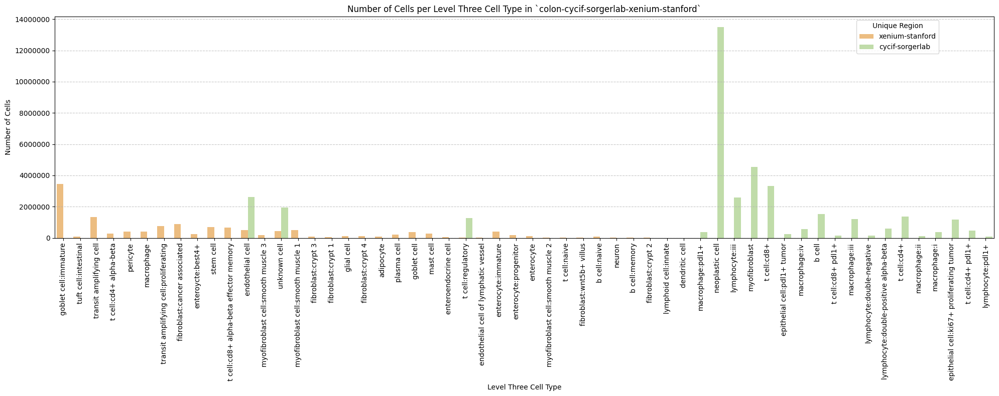
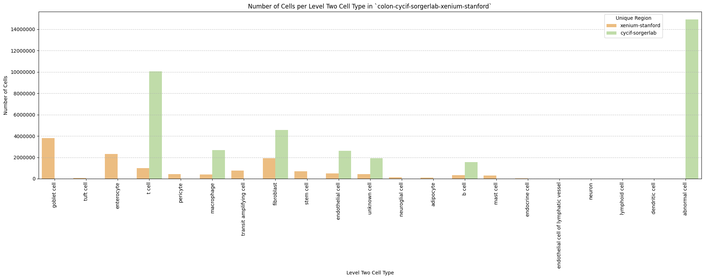
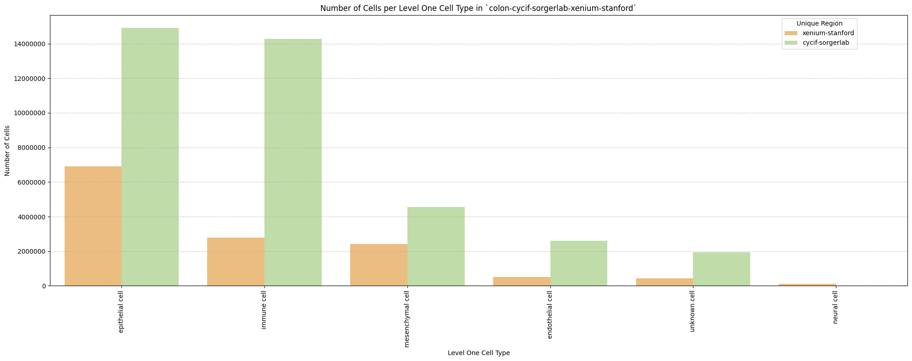
Distance Analysis
# Get mean, median, minimum, maximum distance per unique region per anchor cell type.
df_distance_stats = df_all_edges_with_cell_types.groupby(['Unique Region', 'Anchor Cell Type', 'Anchor Cell Type Level']).agg(
mean_distance=('Distance', 'mean'),
median_distance=('Distance', 'median'),
min_distance=('Distance', 'min'),
max_distance=('Distance', 'max')
).reset_index()
# Print the first few rows of the distance statistics DataFrame.
df_distance_stats| Unique Region | Anchor Cell Type | Anchor Cell Type Level | mean_distance | median_distance | min_distance | max_distance | |
|---|---|---|---|---|---|---|---|
| 0 | cycif-sorgerlab | endothelial cell | Level One Cell Type | 50.997434 | 41.644288 | 3.812328 | 199.999898 |
| 1 | cycif-sorgerlab | endothelial cell | Level Three Cell Type | 50.997434 | 41.644288 | 3.812328 | 199.999898 |
| 2 | cycif-sorgerlab | endothelial cell | Level Two Cell Type | 50.997434 | 41.644288 | 3.812328 | 199.999898 |
| 3 | xenium-stanford | endothelial cell | Level One Cell Type | 27.849965 | 23.669005 | 0.657771 | 199.995802 |
| 4 | xenium-stanford | endothelial cell | Level Three Cell Type | 28.173444 | 23.966392 | 0.657771 | 199.995802 |
| 5 | xenium-stanford | endothelial cell | Level Two Cell Type | 28.173444 | 23.966392 | 0.657771 | 199.995802 |
| 6 | xenium-stanford | endothelial cell of lymphatic vessel | Level Three Cell Type | 110.829788 | 111.918301 | 1.774604 | 199.999893 |
| 7 | xenium-stanford | endothelial cell of lymphatic vessel | Level Two Cell Type | 110.829788 | 111.918301 | 1.774604 | 199.999893 |
Level One Cell Type Analysis
# Get mean, median, minimum, maximum distance per cell type in all unique regions.
cell_type_level = 'Level One Cell Type'
df_all_edges_with_cell_type_level = df_all_edges_with_cell_types[(df_all_edges_with_cell_types['Anchor Cell Type Level'] == cell_type_level) & (df_all_edges_with_cell_types['Anchor Cell Type'] == anchor_cell_type_dict[cell_type_level])]
df_distance_stats_cell_type_level = df_all_edges_with_cell_type_level.groupby([cell_type_level, 'Unique Region']).agg(
mean_distance=('Distance', 'mean'),
median_distance=('Distance', 'median'),
min_distance=('Distance', 'min'),
max_distance=('Distance', 'max')
).reset_index()
df_distance_stats_cell_type_level| Level One Cell Type | Unique Region | mean_distance | median_distance | min_distance | max_distance | |
|---|---|---|---|---|---|---|
| 0 | epithelial cell | cycif-sorgerlab | 59.237837 | 50.521866 | 4.447199 | 199.999898 |
| 1 | epithelial cell | xenium-stanford | 33.029849 | 29.294328 | 0.657771 | 199.988725 |
| 2 | immune cell | cycif-sorgerlab | 43.793795 | 34.054817 | 3.812328 | 199.996448 |
| 3 | immune cell | xenium-stanford | 21.876177 | 17.939406 | 1.545798 | 199.762275 |
| 4 | mesenchymal cell | cycif-sorgerlab | 48.551081 | 39.884627 | 3.859785 | 199.995059 |
| 5 | mesenchymal cell | xenium-stanford | 20.657124 | 16.590299 | 1.097860 | 197.299831 |
| 6 | neural cell | xenium-stanford | 21.862930 | 17.446054 | 1.767815 | 198.410186 |
| 7 | unknown cell | cycif-sorgerlab | 45.301241 | 32.613405 | 4.331525 | 199.996828 |
| 8 | unknown cell | xenium-stanford | 25.550199 | 19.528765 | 1.746407 | 199.995802 |
# Get top five and bottom five cell types with respect to mean distance in each unique region separately.
def get_top_bottom_cell_types_by_mean(df, cell_type_level, unique_region, top_n=5):
# Filter the DataFrame for the specified unique region and cell type level
df_filtered = df[df['Unique Region'] == unique_region]
# Group by the specified cell type level and calculate mean distance
df_grouped = df_filtered.groupby(cell_type_level).agg(mean_distance=('Distance', 'mean')).reset_index()
# Sort by mean distance to get top and bottom cell types
df_sorted = df_grouped.sort_values(by='mean_distance', ascending=False)
# Get top N and bottom N cell types
top_cell_types = df_sorted.head(top_n)
bottom_cell_types = df_sorted.tail(top_n)
return top_cell_types, bottom_cell_types
# Get top and bottom cell types for each unique region in the dataset.
unique_regions = df_all_edges_with_cell_type_level['Unique Region'].unique()
for region in unique_regions:
top_bottom = get_top_bottom_cell_types_by_mean(df_all_edges_with_cell_type_level, cell_type_level, region)
print(f"\nTop 5 cell types in {region}:")
print(top_bottom[0])
print(f"\nBottom 5 cell types in {region}:")
print(top_bottom[1])
Top 5 cell types in xenium-stanford:
Level One Cell Type mean_distance
0 epithelial cell 33.029849
4 unknown cell 25.550199
1 immune cell 21.876177
3 neural cell 21.862930
2 mesenchymal cell 20.657124
Bottom 5 cell types in xenium-stanford:
Level One Cell Type mean_distance
0 epithelial cell 33.029849
4 unknown cell 25.550199
1 immune cell 21.876177
3 neural cell 21.862930
2 mesenchymal cell 20.657124
Top 5 cell types in cycif-sorgerlab:
Level One Cell Type mean_distance
0 epithelial cell 59.237837
2 mesenchymal cell 48.551081
3 unknown cell 45.301241
1 immune cell 43.793795
Bottom 5 cell types in cycif-sorgerlab:
Level One Cell Type mean_distance
0 epithelial cell 59.237837
2 mesenchymal cell 48.551081
3 unknown cell 45.301241
1 immune cell 43.793795# Get top five and bottom five cell types with respect to median distance in each unique region separately.
def get_top_bottom_cell_types_by_median(df, cell_type_level, unique_region, top_n=5):
# Filter the DataFrame for the specified unique region and cell type level
df_filtered = df[df['Unique Region'] == unique_region]
# Group by the specified cell type level and calculate median distance
df_grouped = df_filtered.groupby(cell_type_level).agg(median_distance=('Distance', 'median')).reset_index()
# Sort by median distance to get top and bottom cell types
df_sorted = df_grouped.sort_values(by='median_distance', ascending=False)
# Get top N and bottom N cell types
top_cell_types = df_sorted.head(top_n)
bottom_cell_types = df_sorted.tail(top_n)
return top_cell_types, bottom_cell_types
# Get top and bottom cell types for each unique region in the dataset.
unique_regions = df_all_edges_with_cell_type_level['Unique Region'].unique()
for region in unique_regions:
top_bottom = get_top_bottom_cell_types_by_median(df_all_edges_with_cell_type_level, cell_type_level, region)
print(f"\nTop 5 cell types in {region}:")
print(top_bottom[0])
print(f"\nBottom 5 cell types in {region}:")
print(top_bottom[1])
Top 5 cell types in xenium-stanford:
Level One Cell Type median_distance
0 epithelial cell 29.294328
4 unknown cell 19.528765
1 immune cell 17.939406
3 neural cell 17.446054
2 mesenchymal cell 16.590299
Bottom 5 cell types in xenium-stanford:
Level One Cell Type median_distance
0 epithelial cell 29.294328
4 unknown cell 19.528765
1 immune cell 17.939406
3 neural cell 17.446054
2 mesenchymal cell 16.590299
Top 5 cell types in cycif-sorgerlab:
Level One Cell Type median_distance
0 epithelial cell 50.521866
2 mesenchymal cell 39.884627
1 immune cell 34.054817
3 unknown cell 32.613405
Bottom 5 cell types in cycif-sorgerlab:
Level One Cell Type median_distance
0 epithelial cell 50.521866
2 mesenchymal cell 39.884627
1 immune cell 34.054817
3 unknown cell 32.613405# Calculate regional variability
def calculate_regional_variability(df_all_edges_with_cell_type_level, cell_type_level):
""" Calculate regional variability for distances in the given DataFrame.
"""
regional_variability = df_all_edges_with_cell_type_level.groupby('Unique Region')['Distance'].agg([
('mean', 'mean'),
('std', 'std')
]).round(2)
# Add CV as percentage
regional_variability['CV (%)'] = (regional_variability['std'] / regional_variability['mean'] * 100).round(1)
print("\nRegional Variability Analysis:")
print("Mean: Average distance in each region")
print("Std: Standard deviation of distances")
print("CV: Coefficient of Variation (std/mean * 100%)")
print(regional_variability)
# Calculate variability for each cell type
cell_type_variability = df_all_edges_with_cell_type_level.groupby(cell_type_level)['Distance'].agg([
('mean', 'mean'),
('std', 'std')
]).round(2)
# Add CV as percentage
cell_type_variability['CV (%)'] = (cell_type_variability['std'] / cell_type_variability['mean'] * 100).round(1)
print("\nCell Type Variability Analysis (sorted by CV):")
print(cell_type_variability.sort_values('CV (%)', ascending=False))
calculate_regional_variability(df_all_edges_with_cell_type_level, cell_type_level)
Regional Variability Analysis:
Mean: Average distance in each region
Std: Standard deviation of distances
CV: Coefficient of Variation (std/mean * 100%)
mean std CV (%)
Unique Region
cycif-sorgerlab 51.00 35.96 70.5
xenium-stanford 27.85 19.03 68.3
Cell Type Variability Analysis (sorted by CV):
mean std CV (%)
Level One Cell Type
unknown cell 42.86 37.05 86.4
mesenchymal cell 41.49 33.21 80.0
immune cell 41.41 32.80 79.2
neural cell 21.86 16.10 73.7
epithelial cell 53.40 35.30 66.1# Generate Violin Plot
def plot_violin_cells_per_celltype(df_all_edges_with_cell_type_level, cell_type_level, output_dir, density_norm='area'):
sns.set_style("whitegrid")
sns.set_context("notebook", rc={"grid.linewidth": 2})
plt.figure(figsize=(10, 6))
plt.rcParams["svg.fonttype"] = 'none' # to store text as text, not as path
sns.violinplot(data=df_all_edges_with_cell_type_level, x=cell_type_level, y="Distance", density_norm=density_norm, common_norm=True, cut=0, inner="box", split=False, palette='Spectral', alpha=.9)
sns.set_theme(style="whitegrid")
sns.set_context("paper")
font_size = 10
plt.legend(fontsize=font_size)
plt.title(f'Violin Plot of distances by {cell_type_level} (Density Normalization: {density_norm})', fontsize=font_size)
plt.xlabel(f'{cell_type_level}', fontsize=font_size)
plt.ylabel('Distance (\u03bcm)', fontsize=font_size)
# Increase font size for all text in the figure
plt.xticks(fontsize=font_size)
plt.xticks(rotation=90)
plt.yticks(fontsize=font_size)
plt.tight_layout()
plt.savefig(os.path.join(output_dir, f'{dataset_dir}_violin_cells_per_celltype_{cell_type_level}.png'), dpi=300,
bbox_inches='tight',
pad_inches=0.5)
plt.savefig(os.path.join(output_dir, f'{dataset_dir}_violin_cells_per_celltype_{cell_type_level}.svg'), dpi=300,
bbox_inches='tight',
pad_inches=0.5)
plt.show()
plot_violin_cells_per_celltype(df_all_edges_with_cell_type_level, cell_type_level, os.path.join(basepath, figures_output_dir), density_norm='area')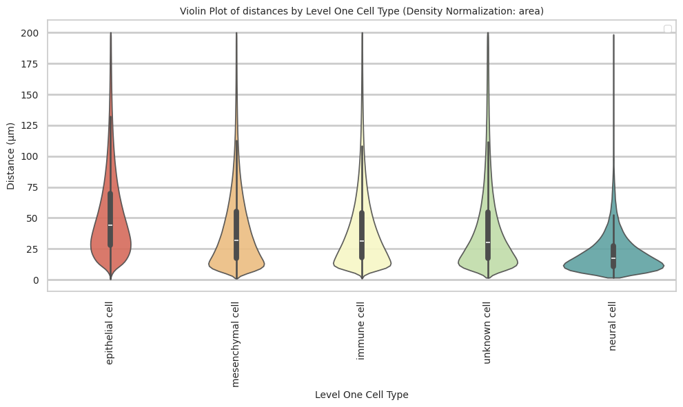
# Boxplots of distribution of distances by cell type and region.
def plot_distance_distribution_boxplots_by_region(df_all_edges_with_cell_type_level, cell_type_level, output_dir):
plt.figure(figsize=(16, 8))
plt.rcParams["svg.fonttype"] = 'none' # to store text as text, not as path
# Create categorical type with only the regions that exist in the data
available_regions = [r for r in regions if r in df_all_edges_with_cell_type_level['Unique Region'].unique()]
df_all_edges_with_cell_type_level['Unique Region'] = pd.Categorical(
df_all_edges_with_cell_type_level['Unique Region'],
categories=available_regions,
ordered=True
)
# Make box plot.
sns.boxplot(data=df_all_edges_with_cell_type_level, x=cell_type_level, y='Distance', hue='Unique Region', showfliers=False, palette='Spectral') # viridis or Spectral palette for better color distinction
font_size = 10
plt.xticks(rotation=90, ha='right', fontsize=font_size)
plt.yticks(fontsize=font_size)
plt.title(f'Distribution of distances by {cell_type_level} and region', fontsize=font_size)
plt.xlabel(f'{cell_type_level}', fontsize=font_size)
plt.ylabel('Distance (\u03bcm)', fontsize=font_size)
plt.legend(bbox_to_anchor=(1, 1), loc='upper left')
plt.tight_layout()
plt.savefig(os.path.join(output_dir, f'{dataset_dir}_distance_distribution_boxplots_by_region_{cell_type_level}.png'), dpi=300,
bbox_inches='tight',
pad_inches=0.5)
plt.savefig(os.path.join(output_dir, f'{dataset_dir}_distance_distribution_boxplots_by_region_{cell_type_level}.svg'), dpi=300,
bbox_inches='tight',
pad_inches=0.5)
plt.show()
plot_distance_distribution_boxplots_by_region(df_all_edges_with_cell_type_level, cell_type_level, os.path.join(basepath, figures_output_dir))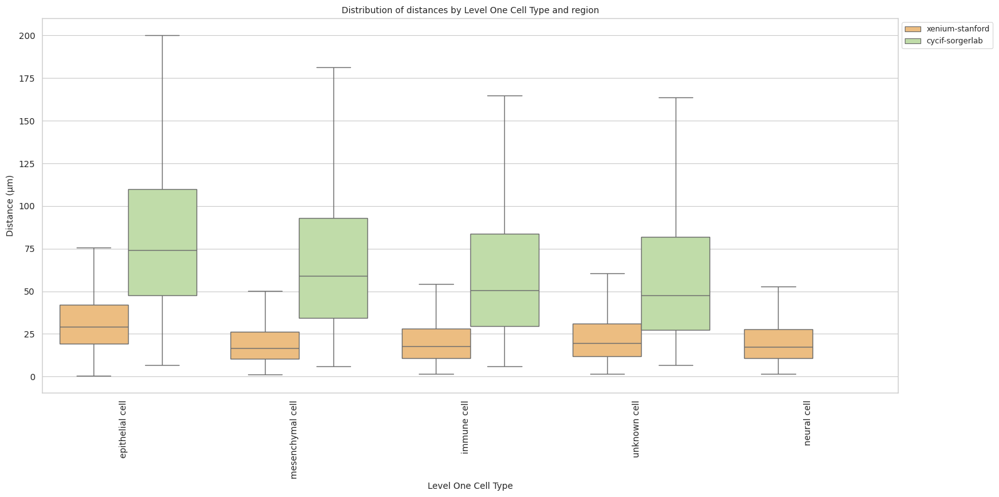
# Boxplots of distribution of distances by cell type and region.
def plot_distance_distribution_heatmap(df_all_edges_with_cell_type_level, cell_type_level, output_dir):
pivot_data = df_all_edges_with_cell_type_level.pivot_table(
values='Distance',
index=cell_type_level,
columns='Unique Region',
aggfunc='median'
)
plt.figure(figsize=(15, 10))
plt.rcParams["svg.fonttype"] = 'none' # to store text as text, not as path
sns.heatmap(pivot_data, annot=True, fmt='.1f', cmap='Spectral')
plt.title(f'Heatmap of median distances by {cell_type_level}', fontsize=12)
font_size = 10
plt.xticks(rotation=90, ha='right', fontsize=font_size)
plt.yticks(fontsize=font_size)
plt.xlabel('Unique Region', fontsize=font_size)
plt.ylabel(f'{cell_type_level}', fontsize=font_size)
plt.tight_layout()
plt.savefig(os.path.join(output_dir, f'{dataset_dir}_distance_distribution_heatmap_{cell_type_level}.png'), dpi=300,
bbox_inches='tight',
pad_inches=0.5)
plt.savefig(os.path.join(output_dir, f'{dataset_dir}_distance_distribution_heatmap_{cell_type_level}.svg'), dpi=300,
bbox_inches='tight',
pad_inches=0.5)
plt.show()
plot_distance_distribution_heatmap(df_all_edges_with_cell_type_level, cell_type_level, os.path.join(basepath, figures_output_dir))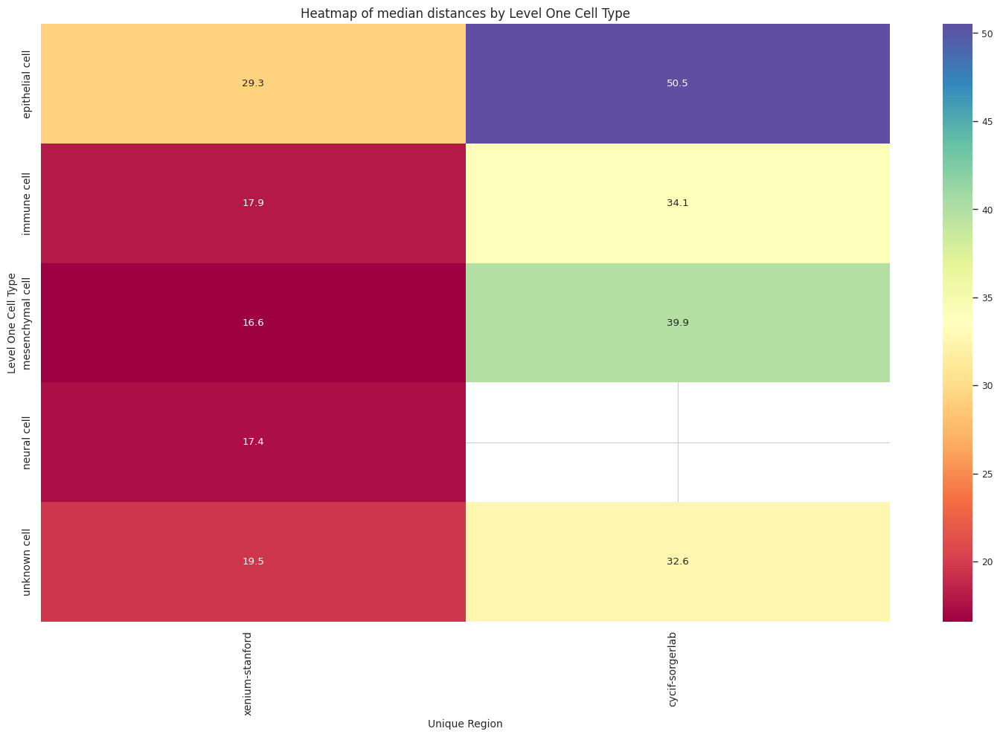
# Generate Violin Plot per unique region in both small intestine and large intestine. Create for all 8 regions as 8 subplots.
def plot_violin_plots_all_regions(df_all_edges_with_cell_type_level, cell_type_level, output_dir, density_norm="area"):
sns.set_style("whitegrid")
sns.set_context("notebook", rc={"grid.linewidth": 1})
plt.rcParams["svg.fonttype"] = 'none' # to store text as text, not as path
font_size = 10
fig, axs = plt.subplots(2, 1, figsize=(10, 15)) # Adjusted figsize for horizontal layout
fig.suptitle(f'Distance distribution per {cell_type_level} in `{dataset_dir}` (density normalization = {density_norm})', fontsize=font_size, y=1)
# Keep the sequence of Cell Types consistent across plots.
cell_types = sorted(df_all_edges_with_cell_type_level[cell_type_level].unique())
# Create a color palette based on the number of unique classes
color_palette = sns.color_palette("Spectral", n_colors=len(cell_types))
# Create a dictionary mapping class to color
class_color_dict = dict(zip(cell_types, color_palette))
for i, region in enumerate(regions):
data_reg = df_all_edges_with_cell_type_level[df_all_edges_with_cell_type_level['Unique Region'] == region]
sns.violinplot(data=data_reg, x=cell_type_level, y="Distance", density_norm=density_norm, common_norm=True, cut=0, inner="box", split=False, palette=class_color_dict, alpha=.9, ax=axs[i], hue=cell_type_level, legend=False, order=cell_types, fill=True)
axs[i].set_title(region, fontsize=font_size)
axs[i].set_xlabel('', fontsize=font_size)
axs[i].set_ylabel('Distance (\u03bcm)', fontsize=font_size)
# axs[i].tick_params(axis='x', labelrotation=90, labelsize=font_size)
# only show xtick labels for the last subplot
if i < len(regions) - 1:
axs[i].set_xticklabels([])
else:
axs[i].set_xticklabels(cell_types, fontsize=font_size, rotation=90, ha='right')
# axs[i].set_ylim(0, data_reg['Distance'].max() * 1.1) # Set y-limits to be consistent across all plots
axs[i].tick_params(axis='both', labelsize=font_size)
# Use fig.text for precise label positioning
fig.figure.text(0.5, -0.02, f'{cell_type_level}', ha='center', va='bottom', fontsize=font_size)
plt.tight_layout()
plt.savefig(os.path.join(output_dir, f'{dataset_dir}_violin_plots_all_regions_{cell_type_level}.png'), dpi=300,
bbox_inches='tight',
pad_inches=0.5)
plt.savefig(os.path.join(output_dir, f'{dataset_dir}_violin_plots_all_regions_{cell_type_level}.svg'), dpi=300,
bbox_inches='tight',
pad_inches=0.5)
plt.show()
plot_violin_plots_all_regions(df_all_edges_with_cell_type_level, cell_type_level, os.path.join(basepath, figures_output_dir), density_norm="count") # density_norm="count" or "area" can be used based on preference.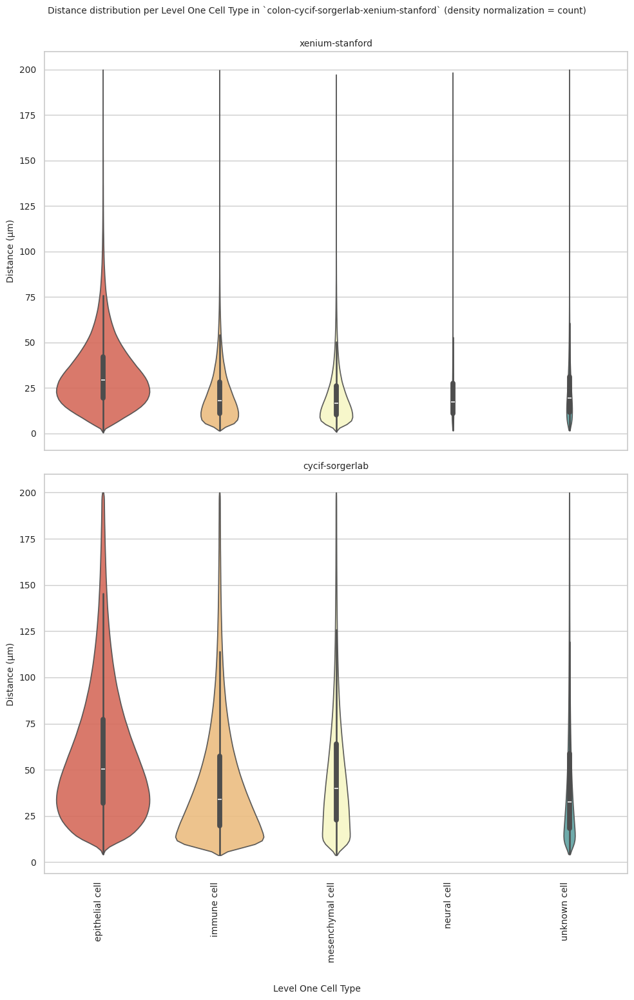
# Generate Split Violin Plot
def plot_violin_cells_per_celltype_split_by_condition(df_all_edges_with_cell_type_level, cell_type_level, output_dir, density_norm="area"):
sns.set_style("whitegrid")
sns.set_context("notebook", rc={"grid.linewidth": 2})
plt.figure(figsize=(15, 10))
plt.rcParams["svg.fonttype"] = 'none' # to store text as text, not as path
sns.violinplot(data=df_all_edges_with_cell_type_level, x=cell_type_level, y="Distance", hue="Unique Region", density_norm=density_norm, common_norm=True, cut=0, inner="box", split=True, palette='Spectral', alpha=.9, hue_order=regions)
sns.set_theme(style="whitegrid")
sns.set_context("paper")
font_size = 10
plt.legend(fontsize=font_size, loc='upper right', bbox_to_anchor=(1.15, 1))
plt.title(f'Split violin plot of distances by {cell_type_level} (Density Normalization: {density_norm})', fontsize=font_size)
plt.xlabel('Cell Type', fontsize=font_size)
plt.ylabel('Distance (\u03bcm)', fontsize=font_size)
# Increase font size for all text in the figure
plt.xticks(fontsize=font_size)
plt.xticks(rotation=90)
plt.yticks(fontsize=font_size)
plt.tight_layout()
plt.savefig(os.path.join(output_dir, f'{dataset_dir}_plot_violin_cells_per_celltype_split_by_condition_{cell_type_level}.png'), dpi=300,
bbox_inches='tight',
pad_inches=0.5)
plt.savefig(os.path.join(output_dir, f'{dataset_dir}_plot_violin_cells_per_celltype_split_by_condition_{cell_type_level}.svg'), dpi=300,
bbox_inches='tight',
pad_inches=0.5)
plt.show()
plot_violin_cells_per_celltype_split_by_condition(df_all_edges_with_cell_type_level, cell_type_level, os.path.join(basepath, figures_output_dir), density_norm="count") # density_norm="count" or "area" can be used based on preference.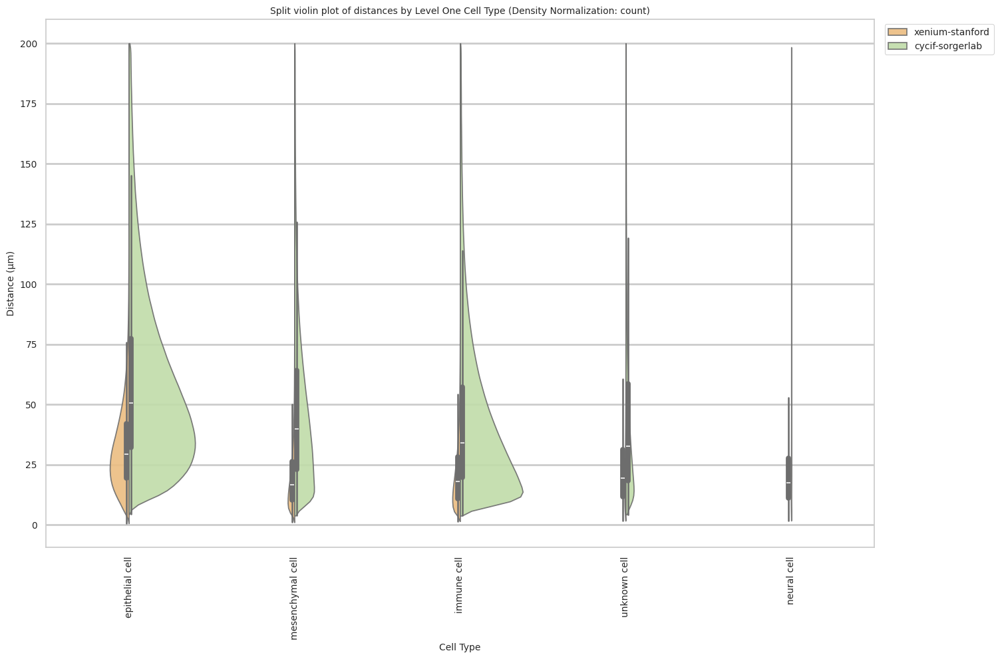
Level Two Cell Type Analysis
# Get mean, median, minimum, maximum distance per cell type in all unique regions.
cell_type_level = 'Level Two Cell Type'
df_all_edges_with_cell_type_level = df_all_edges_with_cell_types[(df_all_edges_with_cell_types['Anchor Cell Type Level'] == cell_type_level) & (df_all_edges_with_cell_types['Anchor Cell Type'] == anchor_cell_type_dict[cell_type_level])]
df_distance_stats_cell_type_level = df_all_edges_with_cell_type_level.groupby([cell_type_level, 'Unique Region']).agg(
mean_distance=('Distance', 'mean'),
median_distance=('Distance', 'median'),
min_distance=('Distance', 'min'),
max_distance=('Distance', 'max')
).reset_index()
df_distance_stats_cell_type_level| Level Two Cell Type | Unique Region | mean_distance | median_distance | min_distance | max_distance | |
|---|---|---|---|---|---|---|
| 0 | abnormal cell | cycif-sorgerlab | 59.237837 | 50.521866 | 4.447199 | 199.999898 |
| 1 | adipocyte | xenium-stanford | 19.307335 | 15.506267 | 1.886588 | 179.829816 |
| 2 | b cell | cycif-sorgerlab | 44.742812 | 36.696395 | 3.812328 | 199.963430 |
| 3 | b cell | xenium-stanford | 19.868268 | 16.177394 | 1.545798 | 193.686073 |
| 4 | dendritic cell | xenium-stanford | 19.604743 | 16.317067 | 3.127862 | 82.356448 |
| 5 | endocrine cell | xenium-stanford | 28.989088 | 25.386019 | 1.870109 | 187.875767 |
| 6 | endothelial cell of lymphatic vessel | xenium-stanford | 20.220957 | 16.182602 | 1.837223 | 191.459774 |
| 7 | enterocyte | xenium-stanford | 35.016424 | 30.665961 | 1.416608 | 199.988725 |
| 8 | fibroblast | cycif-sorgerlab | 48.551081 | 39.884627 | 3.859785 | 199.995059 |
| 9 | fibroblast | xenium-stanford | 20.925389 | 16.923950 | 1.097860 | 197.299831 |
| 10 | goblet cell | xenium-stanford | 32.837030 | 29.215176 | 0.657771 | 199.932057 |
| 11 | lymphoid cell | xenium-stanford | 18.157623 | 17.780635 | 3.743766 | 38.542071 |
| 12 | macrophage | cycif-sorgerlab | 43.943644 | 33.602981 | 4.405694 | 199.996448 |
| 13 | macrophage | xenium-stanford | 17.955820 | 14.656862 | 1.547417 | 195.141153 |
| 14 | mast cell | xenium-stanford | 18.454766 | 15.402588 | 2.088500 | 176.025592 |
| 15 | neuroglial cell | xenium-stanford | 22.059399 | 17.544022 | 1.767815 | 198.410186 |
| 16 | neuron | xenium-stanford | 22.678683 | 18.777829 | 2.719914 | 159.601136 |
| 17 | pericyte | xenium-stanford | 21.258422 | 16.283206 | 1.592156 | 154.814276 |
| 18 | stem cell | xenium-stanford | 31.434218 | 28.909495 | 1.385274 | 199.354161 |
| 19 | t cell | cycif-sorgerlab | 43.606482 | 33.735886 | 4.162606 | 199.994514 |
| 20 | t cell | xenium-stanford | 19.999632 | 16.951968 | 1.759058 | 197.728143 |
| 21 | transit amplifying cell | xenium-stanford | 29.750915 | 25.985201 | 1.732760 | 199.762275 |
| 22 | tuft cell | xenium-stanford | 31.969551 | 29.702991 | 2.702540 | 148.896183 |
| 23 | unknown cell | cycif-sorgerlab | 45.301241 | 32.613405 | 4.331525 | 199.996828 |
| 24 | unknown cell | xenium-stanford | 26.071766 | 19.994800 | 1.746407 | 199.995802 |
# Get top and bottom cell types for each unique region in the dataset.
unique_regions = df_all_edges_with_cell_type_level['Unique Region'].unique()
for region in unique_regions:
top_bottom = get_top_bottom_cell_types_by_mean(df_all_edges_with_cell_type_level, cell_type_level, region)
print(f"\nTop 5 cell types in {region}:")
print(top_bottom[0])
print(f"\nBottom 5 cell types in {region}:")
print(top_bottom[1])
Top 5 cell types in xenium-stanford:
Level Two Cell Type mean_distance
5 enterocyte 35.016424
7 goblet cell 32.837030
17 tuft cell 31.969551
14 stem cell 31.434218
16 transit amplifying cell 29.750915
Bottom 5 cell types in xenium-stanford:
Level Two Cell Type mean_distance
2 dendritic cell 19.604743
0 adipocyte 19.307335
10 mast cell 18.454766
8 lymphoid cell 18.157623
9 macrophage 17.955820
Top 5 cell types in cycif-sorgerlab:
Level Two Cell Type mean_distance
0 abnormal cell 59.237837
2 fibroblast 48.551081
5 unknown cell 45.301241
1 b cell 44.742812
3 macrophage 43.943644
Bottom 5 cell types in cycif-sorgerlab:
Level Two Cell Type mean_distance
2 fibroblast 48.551081
5 unknown cell 45.301241
1 b cell 44.742812
3 macrophage 43.943644
4 t cell 43.606482# Get top and bottom cell types for each unique region in the dataset.
unique_regions = df_all_edges_with_cell_type_level['Unique Region'].unique()
for region in unique_regions:
top_bottom = get_top_bottom_cell_types_by_median(df_all_edges_with_cell_type_level, cell_type_level, region)
print(f"\nTop 5 cell types in {region}:")
print(top_bottom[0])
print(f"\nBottom 5 cell types in {region}:")
print(top_bottom[1])
Top 5 cell types in xenium-stanford:
Level Two Cell Type median_distance
5 enterocyte 30.665961
17 tuft cell 29.702991
7 goblet cell 29.215176
14 stem cell 28.909495
16 transit amplifying cell 25.985201
Bottom 5 cell types in xenium-stanford:
Level Two Cell Type median_distance
4 endothelial cell of lymphatic vessel 16.182602
1 b cell 16.177394
0 adipocyte 15.506267
10 mast cell 15.402588
9 macrophage 14.656862
Top 5 cell types in cycif-sorgerlab:
Level Two Cell Type median_distance
0 abnormal cell 50.521866
2 fibroblast 39.884627
1 b cell 36.696395
4 t cell 33.735886
3 macrophage 33.602981
Bottom 5 cell types in cycif-sorgerlab:
Level Two Cell Type median_distance
2 fibroblast 39.884627
1 b cell 36.696395
4 t cell 33.735886
3 macrophage 33.602981
5 unknown cell 32.613405calculate_regional_variability(df_all_edges_with_cell_type_level, cell_type_level)
Regional Variability Analysis:
Mean: Average distance in each region
Std: Standard deviation of distances
CV: Coefficient of Variation (std/mean * 100%)
mean std CV (%)
Unique Region
cycif-sorgerlab 51.00 35.96 70.5
xenium-stanford 28.17 19.20 68.2
Cell Type Variability Analysis (sorted by CV):
mean std CV (%)
Level Two Cell Type
unknown cell 42.93 37.03 86.3
macrophage 41.74 33.88 81.2
t cell 42.22 33.30 78.9
fibroblast 42.72 33.53 78.5
pericyte 21.26 16.63 78.2
endothelial cell of lymphatic vessel 20.22 15.35 75.9
neuroglial cell 22.06 16.31 73.9
b cell 41.76 30.62 73.3
adipocyte 19.31 14.10 73.0
neuron 22.68 15.63 68.9
mast cell 18.45 12.51 67.8
dendritic cell 19.60 13.26 67.7
transit amplifying cell 29.75 19.42 65.3
enterocyte 35.02 21.68 61.9
abnormal cell 59.24 36.59 61.8
endocrine cell 28.99 17.56 60.6
goblet cell 32.84 19.25 58.6
stem cell 31.43 16.46 52.4
lymphoid cell 18.16 9.48 52.2
tuft cell 31.97 16.41 51.3plot_violin_cells_per_celltype(df_all_edges_with_cell_type_level, cell_type_level, os.path.join(basepath, figures_output_dir), density_norm='area')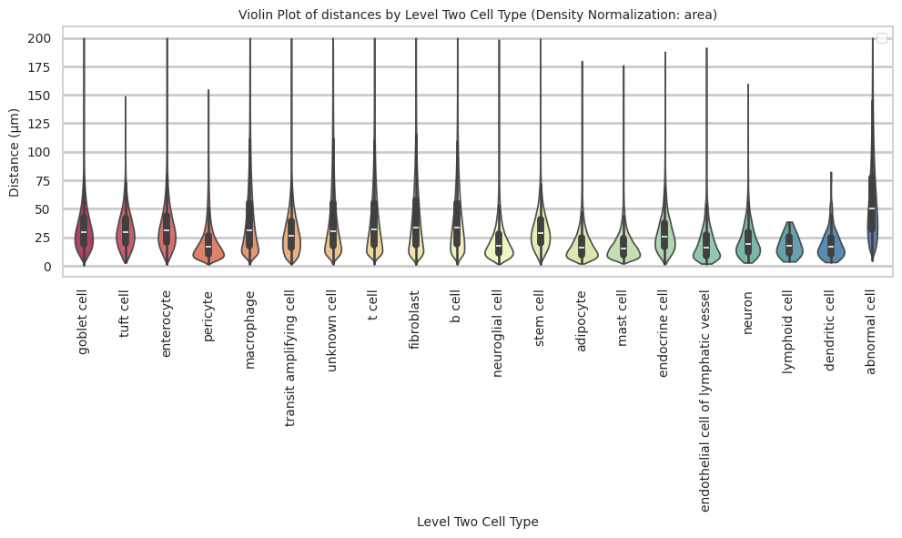
plot_distance_distribution_boxplots_by_region(df_all_edges_with_cell_type_level, cell_type_level, os.path.join(basepath, figures_output_dir))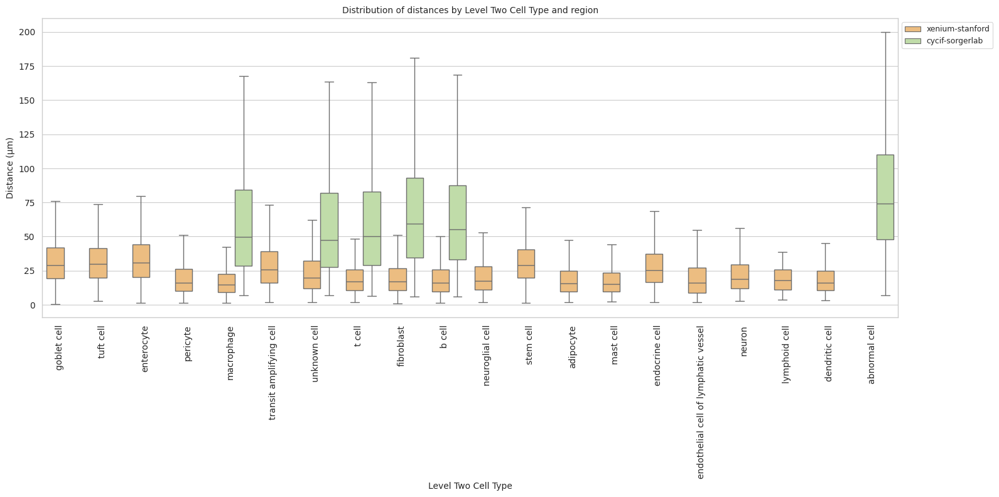
plot_distance_distribution_heatmap(df_all_edges_with_cell_type_level, cell_type_level, os.path.join(basepath, figures_output_dir))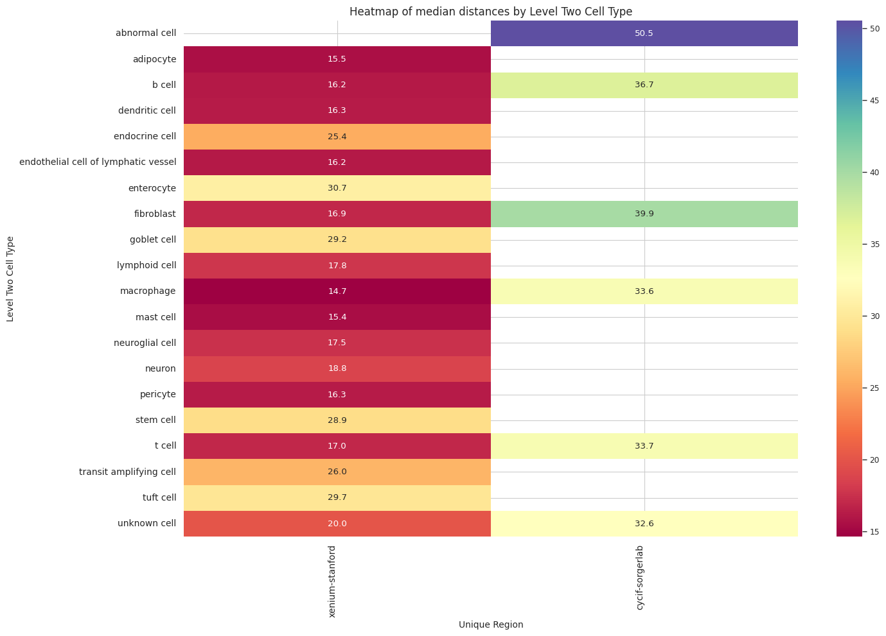
plot_violin_plots_all_regions(df_all_edges_with_cell_type_level, cell_type_level, os.path.join(basepath, figures_output_dir), density_norm="count") # Or, density_norm="count" or "area" based on preference.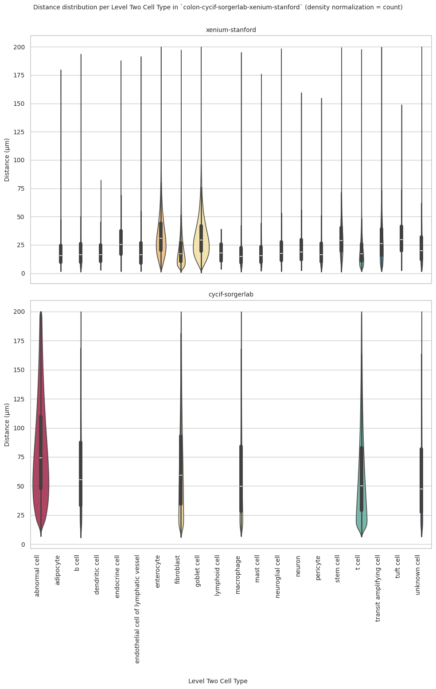
plot_violin_cells_per_celltype_split_by_condition(df_all_edges_with_cell_type_level, cell_type_level, os.path.join(basepath, figures_output_dir), density_norm="count") # density_norm="count" or "area" can be used based on preference.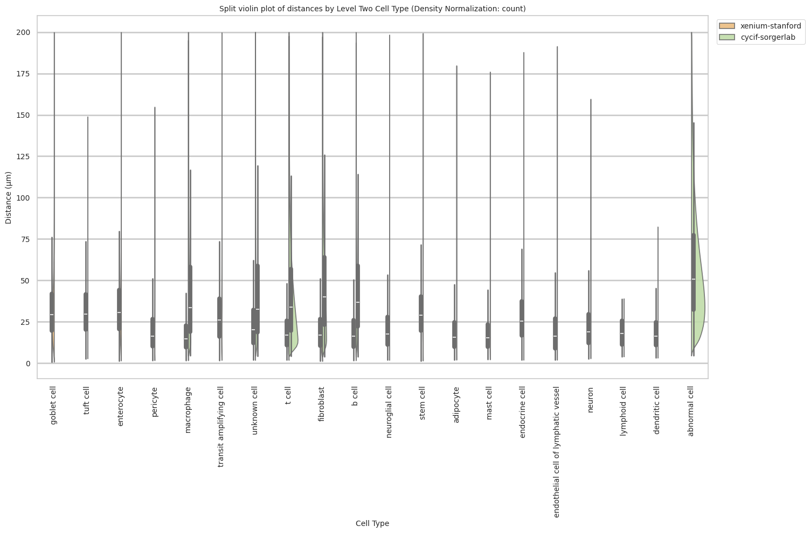
Level Three Cell Type Analysis
# Get mean, median, minimum, maximum distance per cell type in all unique regions.
cell_type_level = 'Level Three Cell Type'
df_all_edges_with_cell_type_level = df_all_edges_with_cell_types[(df_all_edges_with_cell_types['Anchor Cell Type Level'] == cell_type_level) & (df_all_edges_with_cell_types['Anchor Cell Type'] == anchor_cell_type_dict[cell_type_level])]
df_distance_stats_cell_type_level = df_all_edges_with_cell_type_level.groupby([cell_type_level, 'Unique Region']).agg(
mean_distance=('Distance', 'mean'),
median_distance=('Distance', 'median'),
min_distance=('Distance', 'min'),
max_distance=('Distance', 'max')
).reset_index()
df_distance_stats_cell_type_level| Level Three Cell Type | Unique Region | mean_distance | median_distance | min_distance | max_distance | |
|---|---|---|---|---|---|---|
| 0 | adipocyte | xenium-stanford | 19.307335 | 15.506267 | 1.886588 | 179.829816 |
| 1 | b cell | cycif-sorgerlab | 44.742812 | 36.696395 | 3.812328 | 199.963430 |
| 2 | b cell:memory | xenium-stanford | 23.934378 | 20.983564 | 2.652329 | 166.226299 |
| 3 | b cell:naive | xenium-stanford | 24.730393 | 21.919130 | 2.399703 | 158.517322 |
| 4 | dendritic cell | xenium-stanford | 19.604743 | 16.317067 | 3.127862 | 82.356448 |
| 5 | endothelial cell of lymphatic vessel | xenium-stanford | 20.220957 | 16.182602 | 1.837223 | 191.459774 |
| 6 | enterocyte | xenium-stanford | 50.881839 | 44.856792 | 2.963287 | 199.368285 |
| 7 | enterocyte:immature | xenium-stanford | 40.557414 | 34.829782 | 1.689435 | 199.988725 |
| 8 | enterocyte:progenitor | xenium-stanford | 33.809577 | 30.032085 | 1.776411 | 198.196246 |
| 9 | enteroendocrine cell | xenium-stanford | 28.989088 | 25.386019 | 1.870109 | 187.875767 |
| 10 | enteroycte:best4+ | xenium-stanford | 37.294043 | 33.070860 | 2.014740 | 196.207334 |
| 11 | epithelial cell:ki67+ proliferating tumor | cycif-sorgerlab | 54.524579 | 47.126741 | 4.902750 | 199.978230 |
| 12 | epithelial cell:pdl1+ tumor | cycif-sorgerlab | 52.223131 | 44.654349 | 5.014530 | 199.863917 |
| 13 | fibroblast:cancer associated | xenium-stanford | 18.840371 | 15.427564 | 1.097860 | 194.833536 |
| 14 | fibroblast:crypt 1 | xenium-stanford | 20.939047 | 16.763710 | 1.152582 | 183.642976 |
| 15 | fibroblast:crypt 2 | xenium-stanford | 19.641772 | 15.547418 | 2.245442 | 178.327889 |
| 16 | fibroblast:crypt 3 | xenium-stanford | 21.084090 | 17.340476 | 2.056888 | 152.235901 |
| 17 | fibroblast:crypt 4 | xenium-stanford | 19.255869 | 15.785117 | 2.036592 | 188.046806 |
| 18 | fibroblast:wnt5b+ villus | xenium-stanford | 22.921840 | 18.785960 | 1.810569 | 197.299831 |
| 19 | glial cell | xenium-stanford | 22.059399 | 17.544022 | 1.767815 | 198.410186 |
| 20 | goblet cell | xenium-stanford | 33.697180 | 28.314876 | 2.175424 | 199.344614 |
| 21 | goblet cell:immature | xenium-stanford | 32.746761 | 29.297656 | 0.657771 | 199.932057 |
| 22 | lymphocyte:double-negative | cycif-sorgerlab | 41.206296 | 30.842765 | 4.796007 | 199.954444 |
| 23 | lymphocyte:double-positive alpha-beta | cycif-sorgerlab | 42.782968 | 35.938167 | 4.867016 | 199.938330 |
| 24 | lymphocyte:iii | cycif-sorgerlab | 47.359164 | 35.375846 | 4.162606 | 199.993909 |
| 25 | lymphocyte:pdl1+ | cycif-sorgerlab | 35.163868 | 27.508832 | 4.779693 | 199.928861 |
| 26 | lymphoid cell:innate | xenium-stanford | 18.157623 | 17.780635 | 3.743766 | 38.542071 |
| 27 | macrophage | xenium-stanford | 17.955820 | 14.656862 | 1.547417 | 195.141153 |
| 28 | macrophage:i | cycif-sorgerlab | 38.483925 | 28.255123 | 4.405694 | 199.940381 |
| 29 | macrophage:ii | cycif-sorgerlab | 38.832018 | 30.157804 | 4.922261 | 199.976339 |
| 30 | macrophage:iii | cycif-sorgerlab | 45.983769 | 34.746116 | 4.423528 | 199.996448 |
| 31 | macrophage:iv | cycif-sorgerlab | 45.893683 | 35.164175 | 4.732177 | 199.989362 |
| 32 | macrophage:pdl1+ | cycif-sorgerlab | 41.905700 | 34.802750 | 4.440411 | 199.946237 |
| 33 | mast cell | xenium-stanford | 18.454766 | 15.402588 | 2.088500 | 176.025592 |
| 34 | myofibroblast | cycif-sorgerlab | 48.551081 | 39.884627 | 3.859785 | 199.995059 |
| 35 | myofibroblast cell:smooth muscle 1 | xenium-stanford | 23.465234 | 18.905669 | 1.743363 | 195.859268 |
| 36 | myofibroblast cell:smooth muscle 2 | xenium-stanford | 23.503984 | 19.103104 | 2.537373 | 193.737832 |
| 37 | myofibroblast cell:smooth muscle 3 | xenium-stanford | 23.681475 | 19.625080 | 1.369424 | 194.418289 |
| 38 | neoplastic cell | cycif-sorgerlab | 59.784714 | 50.975228 | 4.447199 | 199.999898 |
| 39 | neuron | xenium-stanford | 22.678683 | 18.777829 | 2.719914 | 159.601136 |
| 40 | pericyte | xenium-stanford | 21.258422 | 16.283206 | 1.592156 | 154.814276 |
| 41 | plasma cell | xenium-stanford | 17.203358 | 13.864204 | 1.545798 | 193.686073 |
| 42 | stem cell | xenium-stanford | 31.434218 | 28.909495 | 1.385274 | 199.354161 |
| 43 | t cell:cd4+ | cycif-sorgerlab | 38.980845 | 30.066444 | 4.281592 | 199.971584 |
| 44 | t cell:cd4+ alpha-beta | xenium-stanford | 21.072560 | 17.775179 | 2.182803 | 197.728143 |
| 45 | t cell:cd4+ pdl1+ | cycif-sorgerlab | 40.801490 | 33.508351 | 4.445378 | 199.927999 |
| 46 | t cell:cd8+ | cycif-sorgerlab | 47.833883 | 38.006688 | 4.489292 | 199.994514 |
| 47 | t cell:cd8+ alpha-beta effector memory | xenium-stanford | 19.464183 | 16.545974 | 1.759058 | 195.781337 |
| 48 | t cell:cd8+ pdl1+ | cycif-sorgerlab | 36.841122 | 29.307785 | 4.702515 | 199.534678 |
| 49 | t cell:naive | xenium-stanford | 21.369474 | 18.820881 | 2.670880 | 182.335436 |
| 50 | t cell:regulatory | cycif-sorgerlab | 33.896390 | 26.884923 | 4.275885 | 199.965529 |
| 51 | t cell:regulatory | xenium-stanford | 20.982061 | 17.604950 | 2.425589 | 144.445964 |
| 52 | transit amplifying cell | xenium-stanford | 31.647644 | 28.253443 | 1.416608 | 199.955450 |
| 53 | transit amplifying cell:proliferating | xenium-stanford | 29.750915 | 25.985201 | 1.732760 | 199.762275 |
| 54 | tuft cell:intestinal | xenium-stanford | 31.969551 | 29.702991 | 2.702540 | 148.896183 |
| 55 | unknown cell | cycif-sorgerlab | 45.301241 | 32.613405 | 4.331525 | 199.996828 |
| 56 | unknown cell | xenium-stanford | 26.071766 | 19.994800 | 1.746407 | 199.995802 |
# Get top and bottom cell types for each unique region in the dataset.
unique_regions = df_all_edges_with_cell_type_level['Unique Region'].unique()
for region in unique_regions:
top_bottom = get_top_bottom_cell_types_by_mean(df_all_edges_with_cell_type_level, cell_type_level, region)
print(f"\nTop 5 cell types in {region}:")
print(top_bottom[0])
print(f"\nBottom 5 cell types in {region}:")
print(top_bottom[1])
Top 5 cell types in xenium-stanford:
Level Three Cell Type mean_distance
5 enterocyte 50.881839
6 enterocyte:immature 40.557414
9 enteroycte:best4+ 37.294043
7 enterocyte:progenitor 33.809577
17 goblet cell 33.697180
Bottom 5 cell types in xenium-stanford:
Level Three Cell Type mean_distance
10 fibroblast:cancer associated 18.840371
21 mast cell 18.454766
19 lymphoid cell:innate 18.157623
20 macrophage 17.955820
27 plasma cell 17.203358
Top 5 cell types in cycif-sorgerlab:
Level Three Cell Type mean_distance
13 neoplastic cell 59.784714
1 epithelial cell:ki67+ proliferating tumor 54.524579
2 epithelial cell:pdl1+ tumor 52.223131
12 myofibroblast 48.551081
16 t cell:cd8+ 47.833883
Bottom 5 cell types in cycif-sorgerlab:
Level Three Cell Type mean_distance
8 macrophage:ii 38.832018
7 macrophage:i 38.483925
17 t cell:cd8+ pdl1+ 36.841122
6 lymphocyte:pdl1+ 35.163868
18 t cell:regulatory 33.896390# Get top and bottom cell types for each unique region in the dataset.
unique_regions = df_all_edges_with_cell_type_level['Unique Region'].unique()
for region in unique_regions:
top_bottom = get_top_bottom_cell_types_by_median(df_all_edges_with_cell_type_level, cell_type_level, region)
print(f"\nTop 5 cell types in {region}:")
print(top_bottom[0])
print(f"\nBottom 5 cell types in {region}:")
print(top_bottom[1])
Top 5 cell types in xenium-stanford:
Level Three Cell Type median_distance
5 enterocyte 44.856792
6 enterocyte:immature 34.829782
9 enteroycte:best4+ 33.070860
7 enterocyte:progenitor 30.032085
35 tuft cell:intestinal 29.702991
Bottom 5 cell types in xenium-stanford:
Level Three Cell Type median_distance
0 adipocyte 15.506267
10 fibroblast:cancer associated 15.427564
21 mast cell 15.402588
20 macrophage 14.656862
27 plasma cell 13.864204
Top 5 cell types in cycif-sorgerlab:
Level Three Cell Type median_distance
13 neoplastic cell 50.975228
1 epithelial cell:ki67+ proliferating tumor 47.126741
2 epithelial cell:pdl1+ tumor 44.654349
12 myofibroblast 39.884627
16 t cell:cd8+ 38.006688
Bottom 5 cell types in cycif-sorgerlab:
Level Three Cell Type median_distance
14 t cell:cd4+ 30.066444
17 t cell:cd8+ pdl1+ 29.307785
7 macrophage:i 28.255123
6 lymphocyte:pdl1+ 27.508832
18 t cell:regulatory 26.884923calculate_regional_variability(df_all_edges_with_cell_type_level, cell_type_level)
Regional Variability Analysis:
Mean: Average distance in each region
Std: Standard deviation of distances
CV: Coefficient of Variation (std/mean * 100%)
mean std CV (%)
Unique Region
cycif-sorgerlab 51.00 35.96 70.5
xenium-stanford 28.17 19.20 68.2
Cell Type Variability Analysis (sorted by CV):
mean std CV (%)
Level Three Cell Type
unknown cell 42.93 37.03 86.3
macrophage:i 38.48 31.75 82.5
lymphocyte:double-negative 41.21 33.52 81.3
lymphocyte:iii 47.36 38.13 80.5
macrophage:iii 45.98 36.40 79.2
macrophage:iv 45.89 35.94 78.3
pericyte 21.26 16.63 78.2
t cell:cd4+ 38.98 30.34 77.8
fibroblast:crypt 2 19.64 15.27 77.7
endothelial cell of lymphatic vessel 20.22 15.35 75.9
lymphocyte:pdl1+ 35.16 26.64 75.8
macrophage:ii 38.83 29.21 75.2
fibroblast:crypt 1 20.94 15.58 74.4
t cell:cd8+ 47.83 35.45 74.1
glial cell 22.06 16.31 73.9
fibroblast:wnt5b+ villus 22.92 16.86 73.6
t cell:cd8+ pdl1+ 36.84 27.12 73.6
myofibroblast cell:smooth muscle 2 23.50 17.24 73.4
t cell:regulatory 33.78 24.67 73.0
adipocyte 19.31 14.10 73.0
plasma cell 17.20 12.53 72.8
myofibroblast cell:smooth muscle 1 23.47 16.78 71.5
myofibroblast 48.55 34.69 71.5
macrophage 17.96 12.78 71.2
fibroblast:crypt 4 19.26 13.53 70.2
fibroblast:cancer associated 18.84 13.19 70.0
myofibroblast cell:smooth muscle 3 23.68 16.49 69.6
t cell:cd4+ pdl1+ 40.80 28.36 69.5
b cell 44.74 31.06 69.4
goblet cell 33.70 23.37 69.3
neuron 22.68 15.63 68.9
fibroblast:crypt 3 21.08 14.39 68.3
macrophage:pdl1+ 41.91 28.50 68.0
t cell:cd4+ alpha-beta 21.07 14.31 67.9
mast cell 18.45 12.51 67.8
dendritic cell 19.60 13.26 67.7
lymphocyte:double-positive alpha-beta 42.78 28.11 65.7
t cell:cd8+ alpha-beta effector memory 19.46 12.76 65.6
transit amplifying cell:proliferating 29.75 19.42 65.3
b cell:memory 23.93 15.31 64.0
epithelial cell:pdl1+ tumor 52.22 33.07 63.3
t cell:naive 21.37 13.53 63.3
neoplastic cell 59.78 36.97 61.8
enterocyte:immature 40.56 24.94 61.5
enteroendocrine cell 28.99 17.56 60.6
transit amplifying cell 31.65 19.06 60.2
b cell:naive 24.73 14.89 60.2
epithelial cell:ki67+ proliferating tumor 54.52 32.27 59.2
enteroycte:best4+ 37.29 21.83 58.5
enterocyte:progenitor 33.81 19.47 57.6
goblet cell:immature 32.75 18.76 57.3
enterocyte 50.88 27.81 54.7
stem cell 31.43 16.46 52.4
lymphoid cell:innate 18.16 9.48 52.2
tuft cell:intestinal 31.97 16.41 51.3plot_violin_cells_per_celltype(df_all_edges_with_cell_type_level, cell_type_level, os.path.join(basepath, figures_output_dir), density_norm='area')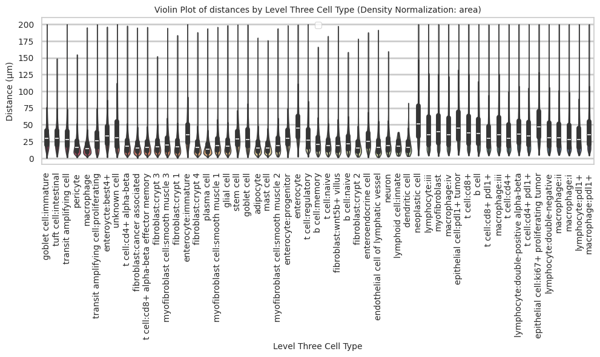
plot_distance_distribution_boxplots_by_region(df_all_edges_with_cell_type_level, cell_type_level, os.path.join(basepath, figures_output_dir))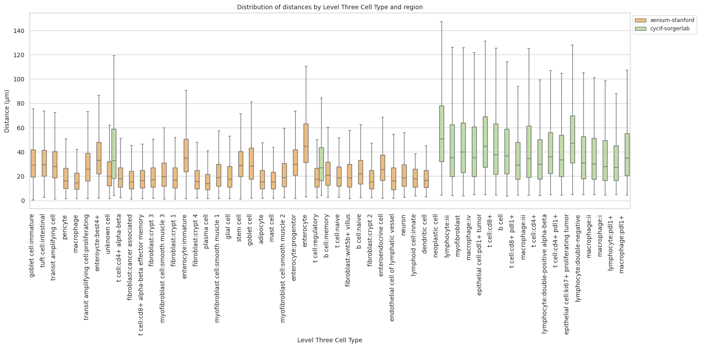
plot_distance_distribution_heatmap(df_all_edges_with_cell_type_level, cell_type_level, os.path.join(basepath, figures_output_dir))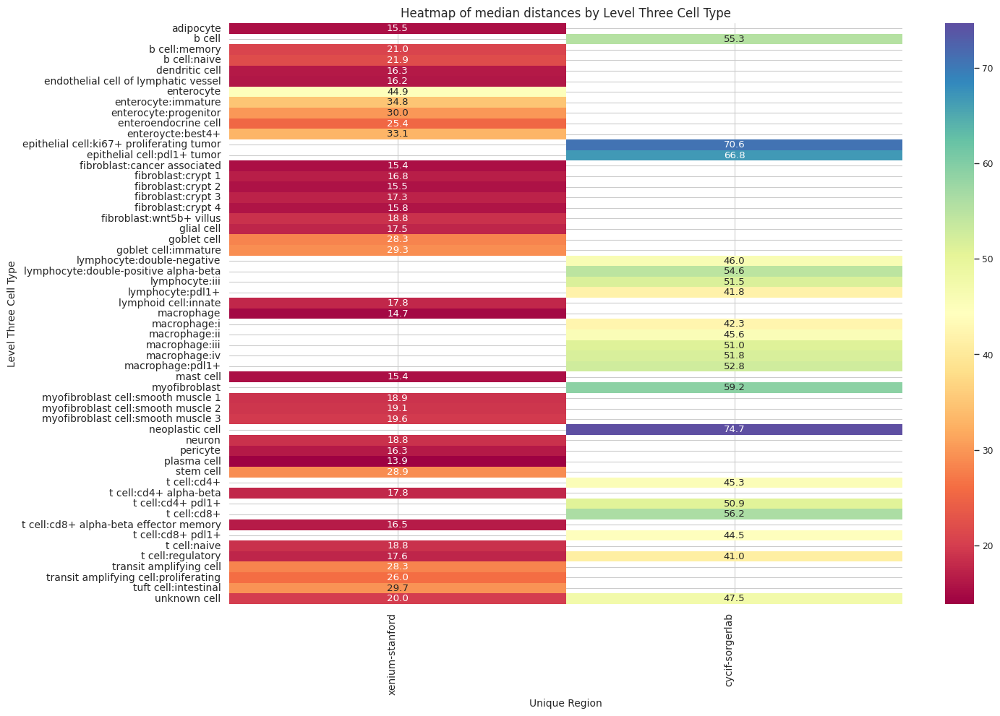
plot_violin_plots_all_regions(df_all_edges_with_cell_type_level, cell_type_level, os.path.join(basepath, figures_output_dir), density_norm="count") # Or, density_norm="count" or "area" based on preference.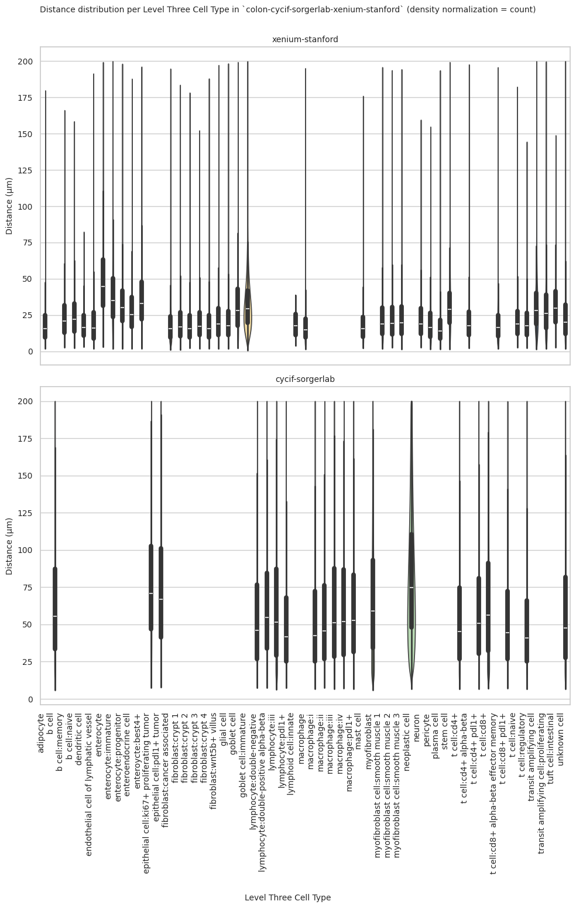
plot_violin_cells_per_celltype_split_by_condition(df_all_edges_with_cell_type_level, cell_type_level, os.path.join(basepath, figures_output_dir), density_norm="count") # density_norm="count" or "area" can be used based on preference.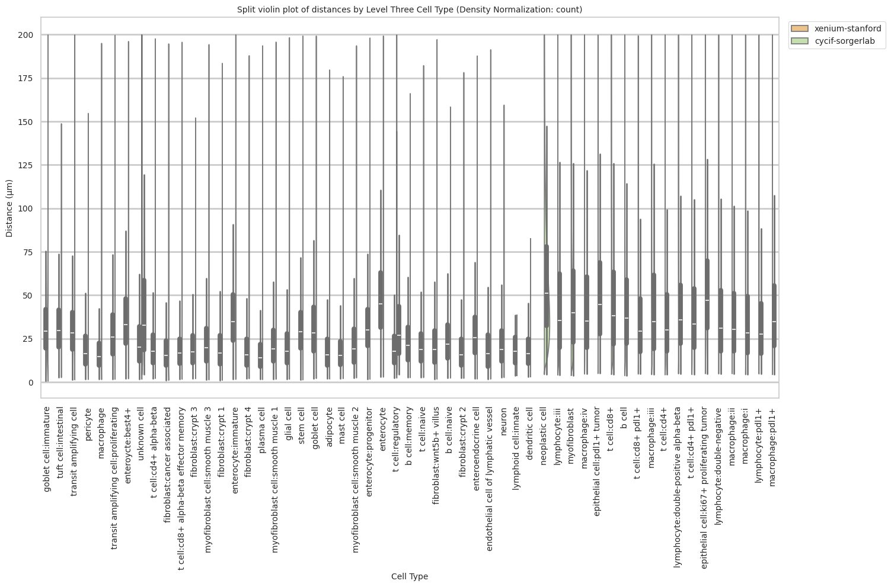